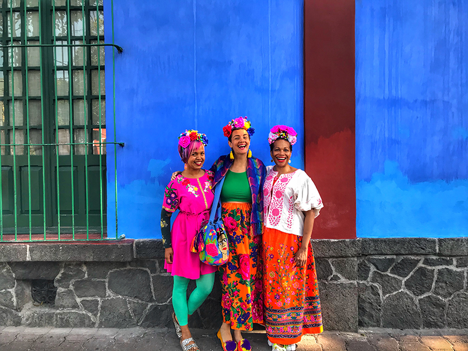
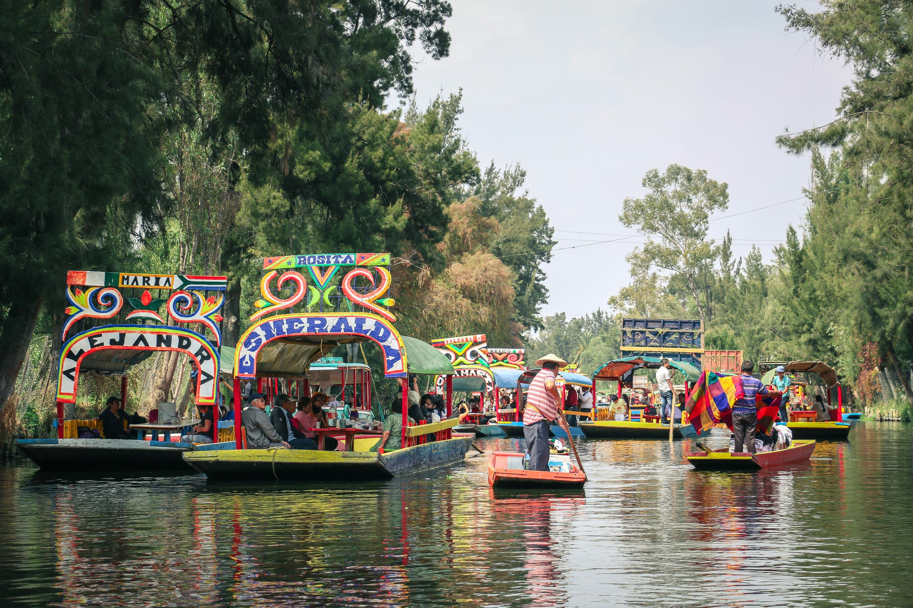
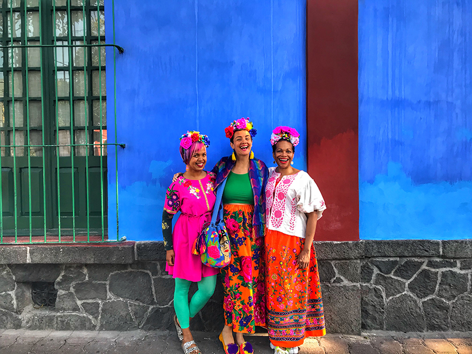
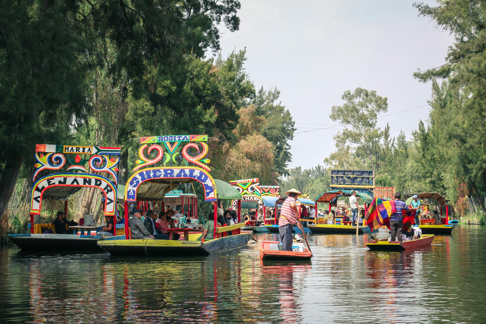

4 Days and 3 Nights Getaway
Price starts at €2,300 per person (excluding flights)
● Day 1
- 12:00PM – Arrive at CDMX Airport, transfer to Roma Norte boutique hotel
- 3:00PM – Tasting tour of the best street tacos in the city
- 7:30PM – Mezcal and mariachi night in Plaza Garibaldi
● Day 2
- 9:00AM – Visit to Zócalo, Templo Mayor ruins, and the Cathedral
- 1:00PM – Traditional comida in the historic center
- 4:00PM – Museum visit: Palacio de Bellas Artes or Museo Soumaya
- 8:00PM – Rooftop dinner in Condesa
● Day 3
- 7:30AM – Early visit to Teotihuacan pyramids with local guide
- 1:30PM – Lunch in a cave restaurant near the ruins
- 5:00PM – Return to city & optional Frida Kahlo Museum in Coyoacán
- 8:00PM – Lucha libre match (Mexican wrestling!)
● Day 4
- 9:00AM – Float through the Xochimilco canals on a private trajinera
- 12:00PM – Snack stop: elotes & aguas frescas
- 1:00PM – Check-out & airport transfer
 


